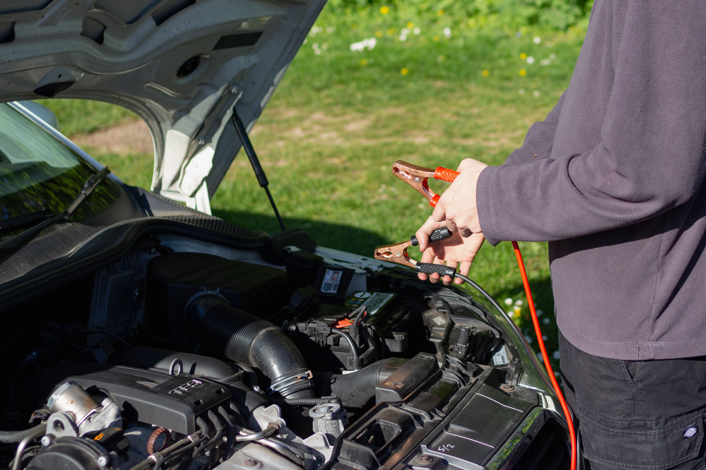

How to Jump Start a Car Safely (Step-by-Step)
To safely jump start a car, connect the jumper cables in the correct order: positive (+) to positive (+), then negative (-) to a suitable ground point on the vehicle with the dead battery. Start the vehicle with the good battery first, then attempt to start the disabled vehicle. Once it starts, disconnect the cables in reverse order.
Never allow the positive and negative clamps to touch each other, and do not attempt to jump-start a battery that is cracked, leaking, swollen, frozen, or visibly damaged.

Can You Safely Jump Start a Car?
Yes. Jump starting a car is usually a straightforward procedure when the battery and both vehicles are in suitable condition and the jumper cables are connected correctly.
A jump start temporarily uses another vehicle's battery to provide enough electrical power to crank the engine. Once the engine starts, the vehicle's charging system can begin supplying electrical power again.
The most important part of the procedure is using the correct cable connection sequence. Incorrect connections can cause sparks, blown fuses, electrical damage, or, in rare cases, a battery explosion.
Jump Starting Safety Precautions
Before connecting the jumper cables, inspect the battery and the surrounding area. Do not proceed if the battery appears damaged or unsafe.
- Do not jump start a cracked or leaking battery.
- Do not attempt to jump start a swollen or severely damaged battery.
- Do not jump start a frozen battery.
- Keep cigarettes, flames, and sparks away from the battery.
- Wear eye protection if available.
- Keep loose clothing away from moving engine components.
- Make sure both vehicles are in Park or Neutral and the parking brakes are applied.
- Turn off headlights, radios, climate control, and unnecessary accessories.
- Do not allow the two vehicles to touch.
If the battery is cracked, leaking, swollen, frozen, or visibly damaged, do not attempt to jump start the vehicle. Have the battery inspected or use professional roadside assistance.
What You Need to Jump Start a Car
A conventional jump start only requires a few basic items:
- A vehicle with a properly charged battery
- A vehicle with the dead or weak battery
- A quality set of jumper cables
- Safety glasses or eye protection if available
Make sure the jumper cables are long enough to reach between the two vehicles without being stretched tightly across the engine compartments.
How to Jump Start a Car Step-by-Step
1. Position the Vehicles
Park the vehicle with the good battery close enough to the vehicle with the dead battery so the jumper cables can reach both batteries or designated jump-start terminals.
Do not allow the two vehicles to touch. Put both vehicles in Park if they have automatic transmissions or Neutral when appropriate for a manual transmission. Apply the parking brakes.
Turn both engines off and switch off unnecessary electrical accessories.
2. Locate the Battery or Jump-Start Terminals
Open the hoods and locate the battery terminals. Some modern vehicles have the battery installed in the trunk, under a seat, or in another location. Many also provide dedicated positive and ground jump-start terminals under the hood.
If your vehicle has designated jump-start terminals, use the locations specified in the owner's manual instead of connecting directly to a difficult-to-access battery.
3. Connect the Red Positive Cable
Take the red jumper cable.
- Connect one red clamp to the positive (+) terminal of the dead battery.
- Connect the other red clamp to the positive (+) terminal of the good battery.
Make sure each clamp has a solid connection and is not touching another terminal or metal component.
4. Connect the Black Cable to the Good Battery
Take the black jumper cable and connect one end to the negative (-) terminal of the good battery.
5. Connect the Final Black Clamp to Ground
Connect the remaining black clamp to an appropriate unpainted metal grounding point on the vehicle with the dead battery.
A solid engine block or manufacturer-designated grounding point is generally preferable to connecting the final clamp directly to the negative battery terminal, provided the vehicle manufacturer allows this connection.
Keep the final connection away from the battery whenever possible. This helps reduce the chance of a spark occurring directly next to battery gases.
Dead battery (+) → Good battery (+) → Good battery (-) → Dead vehicle ground.
6. Start the Vehicle With the Good Battery
Start the vehicle with the good battery and allow its engine to run for several minutes.
This gives the electrical system of the disabled vehicle an opportunity to receive some charge before you attempt to crank its engine.
7. Start the Vehicle With the Dead Battery
Try starting the vehicle with the dead battery.
Do not continuously crank the engine for an extended period. If the engine does not start after a short attempt, stop and wait briefly before trying again.
If the vehicle still will not start after several reasonable attempts, the problem may not be the battery alone. A faulty starter, charging system, ignition component, fuel system, or another electrical problem may be responsible.
8. Let the Started Vehicle Run
Once the disabled vehicle starts, allow both vehicles to run for a short period before disconnecting the jumper cables.
Avoid immediately switching on unnecessary high electrical loads while the battery and charging system are recovering.
9. Disconnect the Jumper Cables in Reverse Order
Remove the jumper cables carefully in the reverse order used during installation:
- Remove the black clamp from the ground point on the previously disabled vehicle.
- Remove the black clamp from the negative (-) terminal of the good battery.
- Remove the red clamp from the positive (+) terminal of the good battery.
- Remove the red clamp from the positive (+) terminal of the previously disabled vehicle.
Keep the metal clamps from touching each other or any other metal surface while removing the cables.
Jumper Cable Connection Order
If you need a quick reminder, use this sequence:
- Red cable → Dead battery positive (+)
- Red cable → Good battery positive (+)
- Black cable → Good battery negative (-)
- Black cable → Dead vehicle ground point
Disconnect the cables in the opposite order after the disabled vehicle has started.
Common Jump Starting Mistakes to Avoid
Connecting the Positive and Negative Terminals Backward
Reversing the polarity can cause electrical damage and potentially create dangerous sparks. Always identify the positive (+) and negative (-) terminals before connecting the cables.
Letting the Cable Clamps Touch
Never allow the metal ends of the jumper cables to touch each other while the cables are connected to a battery.
Using a Damaged Battery
A cracked, leaking, swollen, or frozen battery should not be jump started. Stop and have the vehicle inspected.
Connecting to the Wrong Ground Point
Some vehicles have specific grounding points or jump-start terminals. Consult the owner's manual if you are unsure where the final negative clamp should be connected.
Cranking the Engine Repeatedly
Repeated long cranking attempts can overheat the starter and place additional strain on the electrical system. If the vehicle does not start after several reasonable attempts, investigate the underlying problem.
What to Do After Jump Starting the Car
After the engine starts, do not immediately assume that the problem is solved. A battery that has become completely discharged may need to be properly recharged and tested.
If the battery repeatedly goes dead, possible causes include:
- An aging or failing battery
- A charging system problem
- A failing alternator
- Loose or corroded battery connections
- A parasitic electrical drain
- Lights or accessories being left on
If the vehicle needs repeated jump starts, have the battery and charging system tested instead of relying on jump starting as a permanent solution.
What If the Car Still Won't Start?
If the engine does not start even with a known-good battery and properly connected jumper cables, the battery may not be the only problem.
Possible causes include a faulty starter motor, poor battery connections, a failed alternator, a blown fuse, ignition problems, fuel delivery issues, or another electrical fault.
If you hear a rapid clicking sound, the battery may still have insufficient power or there may be a poor electrical connection. A single click can point toward a starter or starter-circuit problem, although additional testing is required for an accurate diagnosis.
For more help identifying a vehicle that will not start, see our car symptoms and diagnosis guides.
Frequently Asked Questions
Connect the red cable to the positive terminal of the dead battery, then to the positive terminal of the good battery. Connect the black cable to the negative terminal of the good battery, then connect the remaining black clamp to an appropriate ground point on the disabled vehicle.
The red positive cable is connected first. Connect it to the positive terminal of the dead battery and then to the positive terminal of the good battery.
The black cable should be connected to the negative terminal of the good battery and then to an appropriate unpainted metal grounding point on the vehicle with the dead battery, unless the vehicle manufacturer specifies a different connection point.
Incorrect polarity, poor connections, or improper jump-starting procedures can cause electrical problems or damage. Following the vehicle manufacturer's instructions and using the correct cable sequence reduces the risk.
A severely discharged battery can sometimes be jump started, but a battery that is physically damaged, leaking, swollen, or frozen should not be jump started. If the battery repeatedly becomes completely discharged, it should be tested.
Letting the vehicle run after a jump start can help stabilize the electrical system, but idling alone is not a reliable way to fully recharge a deeply discharged battery. A proper battery charger or charging-system inspection may be necessary.